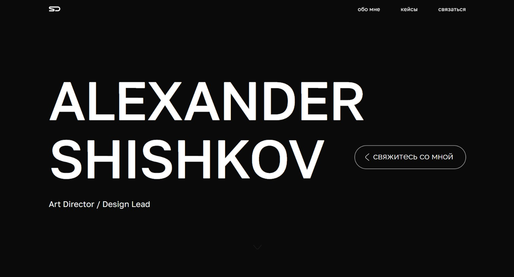

Специализируюсь на создании и поддержке сайтов на 1С-Битрикс, а также на сложных интеграциях, миграциях и доработках Битрикс24. Пишу на PHP и JavaScript.
Понимаю бизнес-задачи: Не просто пишу код, а предлагаю решения. Умею оценивать сроки, декомпозировать задачи и писать понятные ТЗ, что экономит ваш бюджет и время.
Комплексный подход: Благодаря опыту администрирования серверов, я уделяю внимание не только функционалу, но и скорости загрузки, безопасности и стабильной работе проекта.
Прозрачность: Работаю официально как самозанятый (предоставляю чеки, работаю по договору).
Избранные проекты

Портфолио Art DirectorРабочий сайт
Разработка персонального сайта для дизайн-директора с акцентом на типографику и презентацию сложных кейсов.